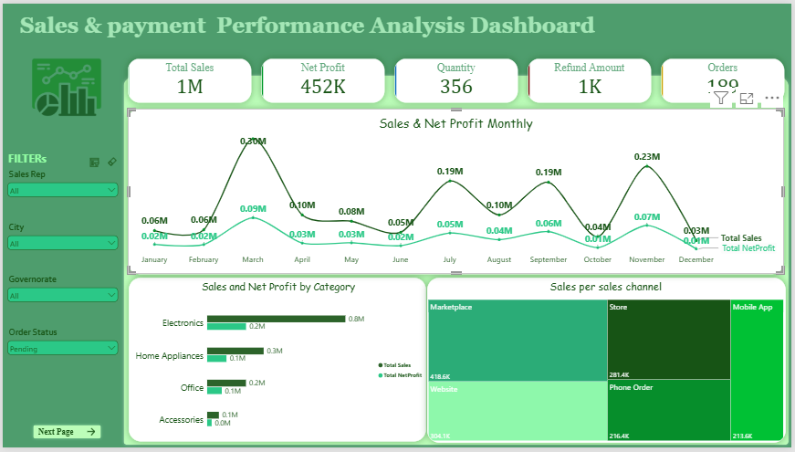

Sales & Payment Performance Analysis Dashboard
A two-page interactive Power BI report that brings sales, profitability, products, sales channels, customer performance, and payment methods into a single analytical experience.
Project overview
The report is organized into two complementary views. The first page focuses on sales and net profit trends, category performance, and sales-channel contribution. The second page explores leading customers, product sales, and payment-method distribution.
KPI values are shown as rounded in the report. No currency unit is specified.
Page 1 — Sales & profit overview
Monthly sales and net-profit trends, category-level comparisons, sales-channel contribution, and slicers for sales representative, city, governorate, and order status.

Page 2 — Customer, product & payment analysis
Top customers by sales, product-level sales ranking, and a breakdown of sales by payment method, with the same report filters available for interactive exploration.

Download the Power BI report
Download the PBIX file to explore the report and interact with its filters in Power BI Desktop.
Download Power BI file (.pbix) ↓
Requires Microsoft Power BI Desktop. The public portfolio includes the report file and dashboard previews; source workbooks are not published.
Skills demonstrated
- Building multi-page interactive Power BI reports.
- Designing KPI cards and monthly performance visuals.
- Comparing sales and profit across categories and channels.
- Analyzing customers, products, and payment methods.
- Using slicers to support report exploration.
Public sharing note
This case study shares the PBIX report and dashboard screenshots only. The accompanying source workbook is intentionally excluded from the public repository.